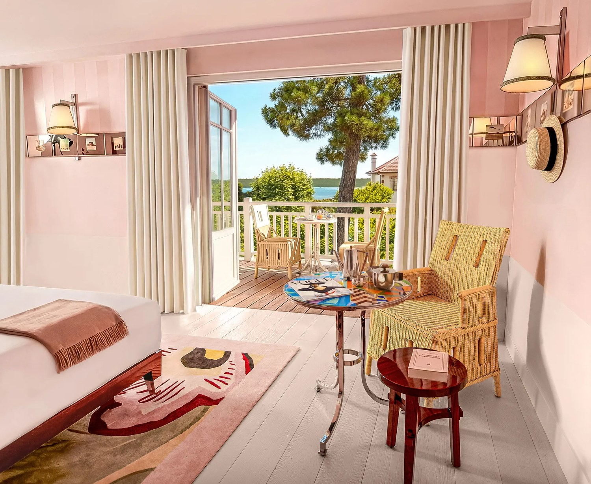
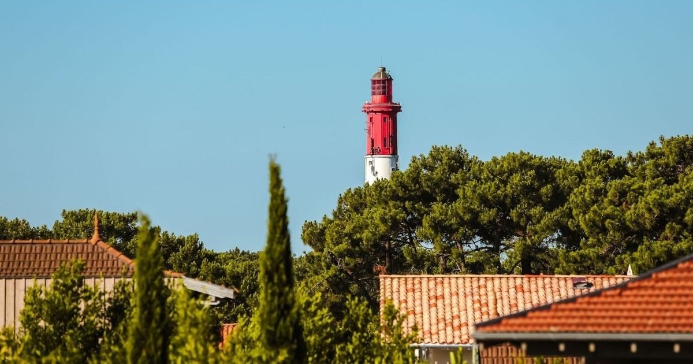

Villa Colette, au Cap-Ferret : un Starck derrière une façade arcachonnaise
Vingt-huit clés, un rose poudré assumé du sol au plafond, et une presqu'île qui n'avait jamais rien vu de tel. Ce qui vaut le détour, et ce qui manque.

Une chambre et son balcon sur la pinède. Photo : Villa Colette, site officiel.
L'essentielCe qu'il faut savoir avant de réserver
- Vingt-huit clés seulement, dans un 5 étoiles dont les intérieurs sont signés Philippe Starck. C'est la première fois qu'un designer de ce rang travaille la presqu'île.
- Une table, pas une étoile. La cuisine est confiée au chef Benjamin Six, dans un registre volontairement éloigné des huîtres et de la sole meunière du bassin.
Le Cap-Ferret a un problème d'uniformité : le bois blanc, le lin froissé et la cabane réinventée y tiennent lieu de projet décoratif depuis vingt ans. La Villa Colette rompt avec cela, et c'est la seule vraie raison d'en parler. Nous l'évaluons 9,0/10 au Score LMHS, avec un Indice Presqu'île de 4,6/5, notre indice thématique pour cette page.
Une façade qui ment, et c'est volontaire
De la rue, rien ne prévient. Briques rouges, bois blanc, décors de toiture : la maison a l'allure d'une villa arcachonnaise du XIXe siècle, de celles qu'on bâtissait pour les bains de mer. L'effet est délibéré, et c'est le geste le plus intelligent du projet : l'extérieur respecte le village, l'intérieur ne lui doit rien.
Le basculement se fait dès l'entrée. Le hall et le bar sont traités dans un jaune franc, et à partir de là plus rien ne rappelle le Sud-Ouest. C'est déroutant les dix premières secondes, puis cela devient la signature de la maison.
Le travail de Starck, et ce qu'il faut en penser
Les intérieurs sont signés Philippe Starck dans leur intégralité, mobilier compris. La palette tient en trois notes : le rose poudré des chambres, le jaune de l'entrée, le citron du bar. Sur le papier, cela devrait être insupportable. Dans les faits, cela fonctionne, parce que la cohérence ne cède jamais : les tapis, les luminaires, les tables de chevet, les poignées relèvent du même exercice.
Deux détails valent d'être cités, parce qu'ils disent le niveau d'intention. Une ligne de miroirs incrustés de petites images court à hauteur d'œil dans les chambres, et donne l'impression de photographies de famille qui n'ont jamais existé. Et le bar est installé dans une malle de voyage surdimensionnée, face à un piano de bois clair. Rien de tout cela n'est du mobilier de catalogue.

Photo : Villa Colette, site officiel.
Vingt-huit clés, et la question de la vue
La maison compte vingt-huit chambres et suites, ce qui la place dans la catégorie des petites adresses malgré son classement. Toutes disposent d'un prolongement extérieur, balcon, terrasse ou jardin privatif, mais ces prolongements ne donnent pas tous sur la même chose : certains ouvrent sur le bassin, d'autres sur le village, d'autres sur la pinède. C'est le seul point sur lequel nous conseillons de ne pas réserver au hasard : à ce niveau de tarif, l'écart entre une vue bassin et une vue village se paie et se ressent.
Le confort relevé est celui qu'on attend d'un 5 étoiles : literie haut de gamme, salles de bains en marbre clair, machine à expresso. Le tissu du dressing est signé Pierre Frey. Rien de spectaculaire, et c'est normal : ce n'est pas là que la maison joue sa partition.
La table : un parti pris, pas une ambition
La cuisine est confiée au chef Benjamin Six, et la maison ne revendique aucune ambition de guide. Le registre est franchement éloigné de ce qui se sert autour du bassin : ni sole meunière, ni plateau d'huîtres en pièce maîtresse, mais une carte de partage aux influences mêlées. C'est un choix, et il est cohérent avec le reste : la Villa Colette ne cherche pas à faire du Cap-Ferret, elle cherche à en proposer autre chose.
Deux rendez-vous complètent la table, un brunch le dimanche et un teatime l'après-midi, tous deux ouverts à la clientèle extérieure. C'est le moyen le plus simple de juger de la maison sans y réserver une nuit à 405 euros.
Villa Colette en bref
| Adresse | 39 boulevard de la Plage, 33970 Lège-Cap-Ferret |
| Téléphone | +33 5 35 75 75 35 |
| Courriel | contact@villacolette.com |
| Catégorie | 5 étoiles |
| Capacité | 28 chambres et suites |
| Intérieurs | Philippe Starck |
| Table | Restaurant et bar, cuisine du chef Benjamin Six, ouverts aux extérieurs |
| Spa | Aucun |
| À disposition | Vélos électriques, sorties en bateau sur le bassin |
| Tarifs | À partir de 405 € la nuit |
| Score LMHS | 9,0/10 · Indice Presqu'île 4,6/5 |
Informations relevées le 27 août 2026 sur le site officiel de l'établissement.
Pour qui est faite cette maison
Pour qui. Pour ceux que le bois blanc et le lin froissé du bassin ont fini par lasser. Pour un week-end en couple où l'hôtel est une destination et pas seulement un lit. Pour les curieux de design, qui trouveront ici le seul projet de cette ambition sur la presqu'île.
FAQ : Villa Colette, Cap-Ferret
Combien coûte une nuit à la Villa Colette ?
À partir de 405 euros, relevé effectué le 27 août 2026, avec de forts écarts selon la catégorie et la saison. Le Cap-Ferret est l'une des destinations françaises où la saisonnalité pèse le plus : juillet et août n'ont rien à voir avec le printemps ou l'automne, ni en tarif ni en fréquentation.
La Villa Colette a-t-elle un spa ?
Non. L'établissement ne dispose ni de sauna, ni de hammam, ni de piscine intérieure, ni de cabine de soin. C'est la principale limite de la maison, et elle la place hors jeu pour un séjour bien-être. Pour un spa sur le bassin d'Arcachon, il faut chercher ailleurs.
Qui a signé la décoration de la Villa Colette ?
Philippe Starck, pour l'intégralité des intérieurs, mobilier compris. C'est le premier projet de ce rang sur la presqu'île du Cap-Ferret. La palette repose sur trois dominantes : rose poudré dans les chambres, jaune à l'entrée, citron au bar. Le parti pris est tenu jusqu'au mobilier et aux luminaires, ce qui est plus rare que les hôtels dits « à thème » ne le laissent croire.
Peut-on dîner à la Villa Colette sans y dormir ?
Oui. Le restaurant et le bar sont ouverts à la clientèle extérieure, de même que le brunch du dimanche et le teatime de l'après-midi. La cuisine est celle du chef Benjamin Six. C'est le moyen le plus simple de se faire une idée de la maison avant d'y réserver une nuit.
La Villa Colette est-elle au bord de l'eau ?
Non, elle est au village, boulevard de la Plage, à proximité de l'embarcadère de Bélisaire et du marché. Certaines chambres ouvrent sur le bassin, d'autres sur le village ou la pinède : à ce niveau de tarif, vérifiez l'orientation avant de réserver. La maison prête des vélos électriques et propose des sorties en bateau, ce qui compense largement l'absence d'accès direct à la plage.
Le mot de LucasLa première maison du bassin qui ne copie personne
Le Cap-Ferret est une destination magnifique dont l'hôtellerie s'est longtemps contentée de se citer elle-même : du bois blanc, du lin, une cabane réinterprétée, et tout le monde était content. La Villa Colette est la première adresse qui refuse ce jeu, et c'est pour cela qu'elle compte, bien plus que pour le nom du designer en couverture. Une chose tempère mon enthousiasme, et je préfère l'écrire : le rose poudré tenu du sol au plafond ne fera pas l'unanimité, et c'est une maison qui choisit ses clients autant qu'ils la choisissent. Venez pour le lieu, pas pour la plage.
Lucas Lecoq, rédacteur en chef
Méthode et sources
Avis noté 9,0/10 au Score LMHS, issu de la grille LMHS employée dans nos avis d'établissement, et 4,6/5 à l'Indice Presqu'île, indice thématique propre à cette page : cohérence du projet décoratif, rapport au bâti local, table, accès au bassin et singularité de l'adresse dans sa destination. Aucun séjour de contrôle n'a été effectué, et nous ne prétendons pas le contraire : nous n'avons pas dormi ici. Classement, capacité, intérieurs, table, équipements et tarif d'entrée ont été relevés le 27 août 2026 sur le site officiel de l'établissement. Aucun partenariat commercial, aucune affiliation. Photographies : site officiel de l'établissement.
Pour aller plus loin
- Les 50 meilleurs hôtels et spas de France, palmarès national 2026
- Les plus beaux hôtels de Bordeaux : 10 adresses sélectionnées, à une heure du bassin
- Madame C, Strasbourg, avis, l'autre maison de ce site qui tient un parti pris décoratif jusqu'au bout
- Notre méthode, les grilles de notation et les règles d'indépendance